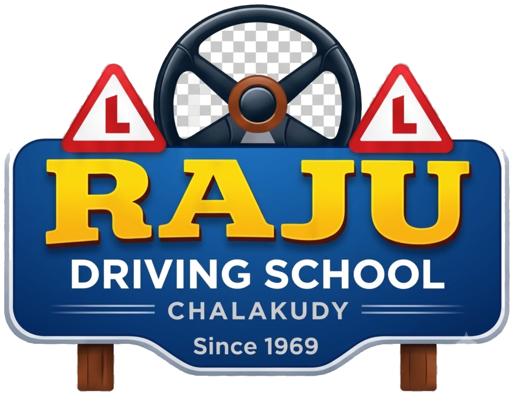
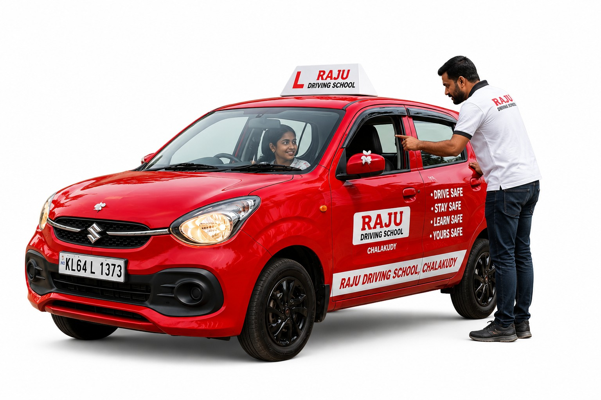

Understand
- Doors, seat and steering position
- Seat-belt and mirror checks
- A deliberate pre-drive routine
Practice: Start every drive from a safe, correctly adjusted position.

A practical learning hub for the fundamentals taught through our basic driving programme. Work through the lessons before, during and after your practical training — one skill at a time.

The supplied IDTR guide progresses from getting comfortable in the cockpit to manoeuvres, junctions, parking, roundabouts and traffic signals. The lesson order below follows that progression.
Tap any lesson to open its learning notes. The descriptions keep the terminology and progression of the supplied IDTR guide while turning the classroom material into an easier digital study format.
This page is a study companion, not a replacement for supervised practical instruction. Use the concepts here to arrive at your lesson prepared, then practise them with your instructor.
Read the lesson and learn the purpose of the skill.
Know what to check before the vehicle moves.
Repeat the skill slowly under supervision.
Use the skill together with observation and control.
Carry the habit into real road situations.
Once you understand the basics, the next step is supervised practice. Start your training with Raju Driving School in Chalakudy.
Enquire about training ↗